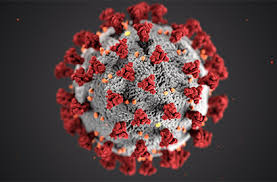
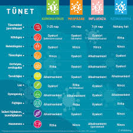

A koronavírusok a nevüket az elektronmikroszkóppal látható, koronára emlékeztető, felszíni kitüremkedéseik alapján kapott koronavírus törzsek alapvetően az állatoknál fordulnak elő, némelyik azonban képes az emberben is fertőzést okozni. Az 1960-as évektől ismert kórokozóként ismert koronavírusok mind állatról emberre, mind emberről emberre terjedhetnek.
Az új koronavírust (SARS-CoV-2) Kínában azonosították 2019 végén. Mára a világ számos országában okoz megbetegedéseket. Kezdetben 2019-nCoV (új koronavírus) névvel illették, majd az Egészségügyi Világszervezet (WHO) javaslatára SARS-CoV-2-re keresztelték a korábbi, SARS-CoV-val (Severe Acute Respiratory Syndrome - súlyos heveny légúti tünetegyüttes vírusa) való rokonsága alapján. Az általa okozott betegséget COVID-19-nek (COVID: coronavirus disease - koronavírus okozta megbetegedés 2019) nevezik.
A vírus leginkább cseppfertőzéssel terjed: köhögéssel, tüsszentéssel, kilégzéssel kerül a környezetbe, majd a közelben tartózkodó másik emberre. Ezen kívül a fertőzött felületek és tárgyak megérintésével a vírus a kézre kerülhet, ami aztán az archoz, szájhoz, orrhoz érintve bejuthat a szervezetbe. Egyelőre nem ismert, hogy pontosan mennyi ideig marad fertőzőképes a vírus a felületeken, annyi azonban bizonyos, hogy az egyszerű fertőtlenítőszerek is elpusztítják.
Az újfajta koronavírus okozta megbetegedés leggyakrabban enyhe tünetekkel jár, láz, köhögés, légszomj, izomfájdalom és fáradékonyság jelentkezhetnek. Ritkábban súlyos kórforma alakulhat ki, ami tüdőgyulladással, heveny légzési elégtelenséggel, vagy akár szepszissel (vérmérgezés), keringési vagy több szervi elégtelenséggel járhat. Azoknál a betegeknél alakul ki gyakrabban súlyos, akár életveszélyes állapot, akik valamilyen krónikus alapbetegségben (magas vérnyomás, szív- és érrendszeri betegség, cukorbetegség, májbetegség, légzőszervi betegség, daganatos betegség) szenvednek.
A maszkok arra valók, hogy a fertőző beteg viselje, ezzel megóvva a környezetét a cseppfertőzéssel átadható kórokozóktól. A maszkok gyártása már Magyarországon is megkezdődött, azonban jelenleg az egészségügyi szolgáltatók ellátása élvez prioritást, a gyógyszertárakkal szemben.
Jelenleg nincs speciális kezelési módja, gyógyszere. Enyhe esetekben a panaszok csillapítása a cél, míg súlyos állapotú betegnél az immunrendszert, légzést, keringést támogató kezeléseket alkalmaznak (pl. oxigénterápia, folyadékegyensúly helyreállítása, egyéb vírusok ellen korábban kifejlesztett gyógyszerek, szükség esetén légzéstámogatás).